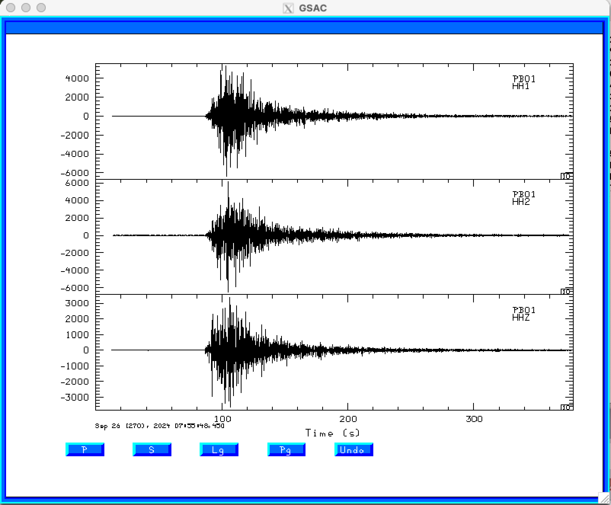
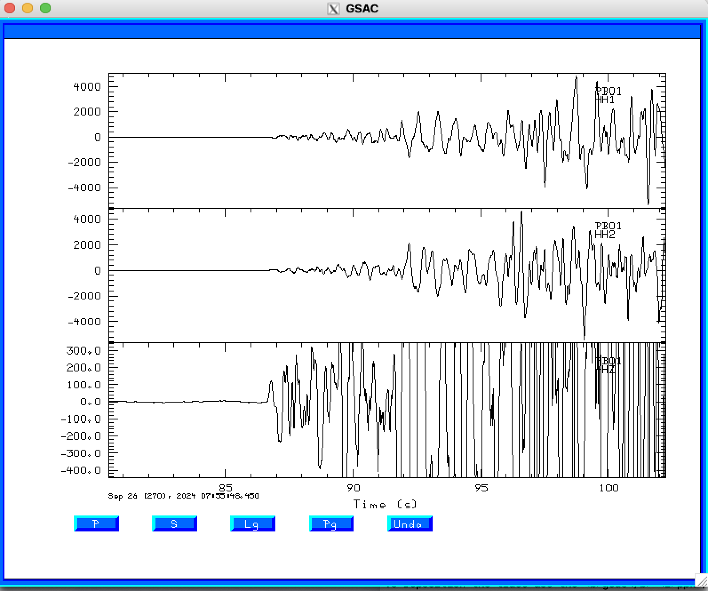
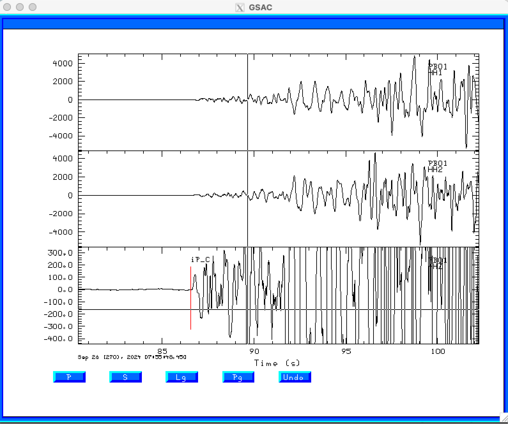
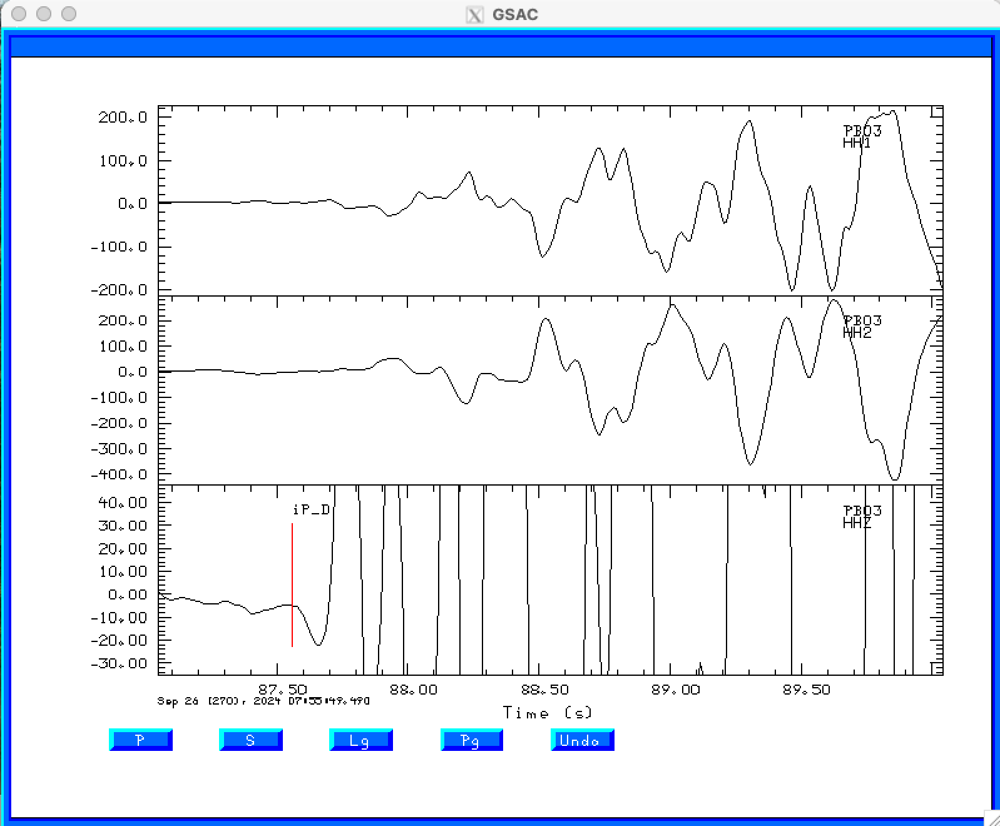
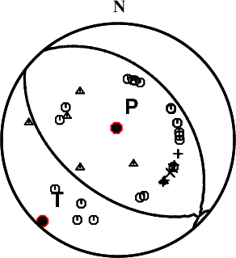

This tutorial shows how to locate the epicenter of a seismic event using gsac, sac2eloc and elocate.
The file event.tgz contains the Sac
waveform files used in this tutorial. Unpack the files
with the command
gunzip -c event.tgz | tar xvf -
This will create the subdirectory DAT which contains the waveform files. You can check to see that the files have the station coordinates properly installed with the command
gsac GSAC> rh * GSAC> lh stla stlo stel GSAC> q
Note that the gsac invokes the code and that the GSAC> are the interactive prompts of the program.
gsac is used to pick the arrival times which are then saved in the header of each sac file. One can use the plotpk or the shorthand ppk to enter the interactive mode and then use 'P' or 'S' commands to time a phase. While this is can be done, gsac has a GUI to make picking easier. One enters the command ppk REG to pick arrivals for local and regional events or ppk TEL for teleseisms. The GUI permits the use to set arrival weights, polarities, and phase name. The example here uses the GUI.
cd DAT gsac GSAC> r * GSAC> ppk regional ... [the GUI appears] ... [when done picking, save the picks in the header of each sac file] GSAC> wh GSAC> q
For the data set the following shows the commands and interactive
session:
cd DAT
gsac
GSAC> r *
GSAC> rtr
GSAC> hp c 1 n 2
GSAC> lp c 3 n 2 [For regional events this is a good frequency band for picking]
GSAC> qdp 10 [To make the display faster, only display every 10th point.
This is permissible since we just did a low pass ]
GSAC> ppk perplot 3 regional
[Use the regional picking GUI and display three traces at
a time since the stations have 3 components of motion]
The result of this sequence is the window
|  |
|  |
|  |
|  |
GSAC> wh GSAC> q
To locate the event, we need to place the arrival picks and other information into the file elocate.dat.
To avoid cluttering the directory containing the sac files, we
will work in the directory above. thus enter the command
sac2eloc DAT/*SAC #[since the sac files ended as .SAC]
The result is the file elocate.dat.
This program is described in Chapter 5of the gsac
tutorial that is the file cps330g.pdf in the directory PROGRAMS.330/DOC/GSAC.pdf
of the source distribution.
elocate has some built in velocity models but Chapter 5 discusses the format of the VEL.MOD file so that a user defined velocity model can be used.
Since elocate is discussed in cps330g.pdf, the following will show the commands used to locate the event. The processing will be in the batch, e.g., non-interactive mode. The user is encouraged to run the program interactively to appreciate how the choice of the velocity model and initial source depth can affect the solution, since event location is a non-linear problem.
If you first execute elocate you will be presented with
the velocity models in the file VEL.MOD. The WUS model is
identified as "7". So a batch run using the WUS model would be
elocate -VELMOD #[Creates the file VEL.MOD in the directory.] elocate -M 7 -D 10 -BATCH > elocate.txt #[Use model 7, an initial depth of 10 km and batch (automatic run.}
The output of this run is in the file
elocate.txt. The first part of this file shows the data
which includes the station, weight, arrival time,. phase and
polarity, and station latitude, longitude and elevation [Note: elocate
does not use elevation corrections]. The results of the iterations
is next which gives latitude, longitude, depth, origin time, and
RMS error. Obviously there is some observation that causes a big
residual. After the maximum number of iterations is achieved or
the solution converges, the fit to each phase is given. Here the P
arrival at PB17 has a large residual, and that trace should be
reexamined. Note that this was weighted 0.00 in the inversion
because of the large residual. The final part, reproduced here is
the solution:
Error Ellipse X= 1.7949 km Y= 2.7735 km Theta = 348.0448 deg (azimuth of X axis)
RMS Error : 1.694 sec
Travel_Time_Table: WUS
Latitude : 31.5325 +- 0.0166 N 1.8476 km
Longitude : -104.1199 +- 0.0290 E 2.7387 km
Depth : 12.90 +- 2.68 km
Epoch Time : 1727337407.380 +- 0.62 sec
Event Time : 20240926075647.380 +- 0.62 sec
Event (OCAL) : 2024 09 26 07 56 47 380
HYPO71 Quality : DB
Gap : 130 deg
ch evla 31.5325 evlo -104.1199 evdp 12.90
ch ocal 2024 09 26 07 56 47 380
ch o gmt 2024 270 07 56 47 380
The last three line are gsac commands if you wish to place
the location information in the sac files, e.g.,
gsac
GSAC> rh *SAC
GSAC> ch evla 31.5325 evlo -104.1199 evdp 12.90
GSAC> ch ocal 2024 09 26 07 56 47 380
GSAC> wh
GSAC> q
If the CMPINC and CMPAZ fields are set in the header, you are ready to rotate the three component traces to make Z, R and T traces.
Several output files are created: fmplot.tmp, assoc.tmp,
origin.tmp. orger.tmp and elocate.sum. They contain information
from the elocate.txt listing. The fmplot.tmp can be use
with the program fmplot to plot the first motions. In this
example, there is
a proposed focal mechanism (solid curves) that is compared to the
observations. The commands are
#!/bin/sh elocate -VELMOD elocate -M 7 -BATCH -D 10 > elocate.txt # compare the first motion to this solution STK=320 DIP=40 RAKE=-80 fmplot -S $STK -D $DIP -R $RAKE -F fmplot.tmp -tp plotnps -BGFILL -F7 -W10 -EPS -K < FMPLOT.PLT > t.eps # Use ImageMagick to convert EPS to PNG convert -trim t.eps slufm.png
The result is ithe file slufm.png
|  |
I sometimes use elocate in the processing of regional
moment tensors which the time shift between the observed and
predicted waveforms indicates a mislocation. I also run this code
then the moment tensor is not what was expected given its
location. In this case I compare the moment tensor nodal planes
and P (pressure) and T (tension) axes to P-wave first motions.
Given perfect data sets and the correct regional velocity model,
the moment tensor mechanism and depth should agree with observed
p-wave first motions and hypocenter. This is the ideal validation
of a solution.
If you have an independent solution, with the event coordinates
set in the SAC file headers, the traces can be rotated. Further
theoretical arrival times for a model can be entered into the
header given the distance and source depth in the header. Often I
find that the S arrival is sharper on the T (transverse
component), and thus read it from that component.